The friends and family helping us pull off the weekend (and keeping us calm).
The Bridesmaids
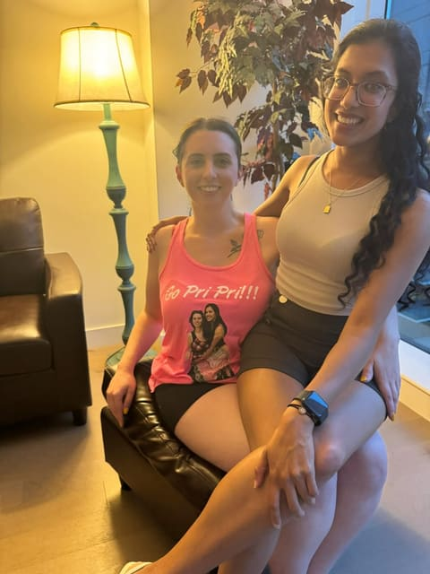
Cassie
Hi! I’m Cassie. Priya and I have been by each other’s sides since 7th grade. From awkward kids in middle school, graduations from high school, college, master’s degrees, Priya’s medical school… and another 3 degrees she’s accomplished, we’ve loved and supported one another through each version of ourselves. After a very long shift in Residency, Priya even drove over an hour to be in the room when my daughter was born. And she’s my daughter’s favorite person (seriously, she wants nothing to do with me when Auntie Priya is around lol). I remember feeling a calm wash over me when I saw her come through the door. Because that’s the kind of friend she is. Not just to me, but to everyone she befriends. She is a blessing in all of our lives. It’s my honor to love and support her and Sanjay in this next chapter of their lives together. And a privilege to be a witness to their continuing love story. All my love to you both. Always.
Czariavna
I’m Czariavna. I’ve had the privilege of knowing Priya since middle school, and over the years we’ve grown up more like sisters than friends. It’s been so special to watch her find her perfect match in Sanjay. Their love and unwavering support for one another make them truly meant to be. I’m honored to stand by Priya’s side as one of her bridesmaids and can’t wait to celebrate this beautiful new chapter and all the happiness that lies ahead for them.
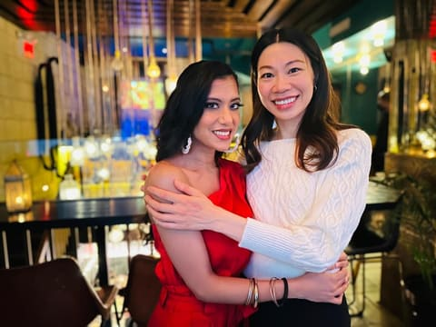
Victoria
I’m Victoria, and I had the privilege of meeting Priya in college, where we were sophomore-year roommates waking up to Jay Sean alarm clocks before organic chemistry class. Through years of life updates, skincare deep-dives, workout dates, and endless heart-to-hearts, she’s always been an incredible friend. Watching her and Sanjay build a life together has been such a joy. I’m so excited to support my favorite girl and celebrate this next beautiful chapter with them!
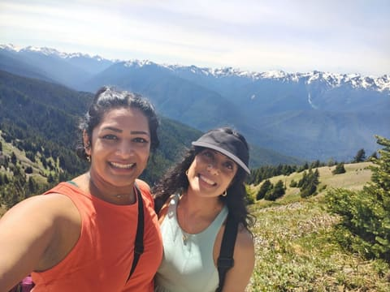
Neelu
I’m Neelu, and I’m Priya’s cousin. Like her, I studied abroad and got to travel everywhere and meet amazing people. Priya and I have travelled all over together (whether it was for family get-togethers or just for fun), and I love that no matter where we go, she is always down to workout with me. I’m so excited for her and Sanjay in this next step of life and can’t wait to see where it takes them!
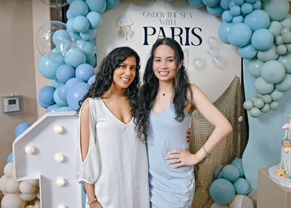
Mindy
I’m Mindy, a family physician, wife, mom, and one of the lucky friends who gets to stand beside Priya on her wedding day. Some friendships become family, and that’s exactly what Priya is to me. We met at St. George’s Medical School in 2015, and from the very beginning I knew she was someone special. Over the past 11 years, we’ve been through every season of life together, from late night studying and endless phone calls to celebrating life’s biggest milestones. She stood by my side as one of my bridesmaids, and now I have the honor of standing by hers. Priya is one of the sweetest, smartest, and most beautiful people I know, inside and out. She’s the kind of friend who celebrates your victories, carries you through your hardest moments, and always reminds you of your worth. I’m so grateful that what started in medical school became a lifelong friendship. Here’s to all the memories we’ve made and to many more years of laughing, crying, and growing together. I love you so much. ❤️
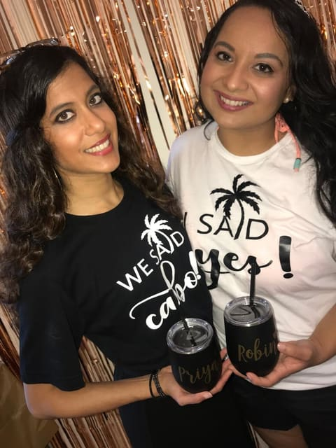
Robin
Hi, my name is Robin! Priya and my love story also started with neuroscience! During one of the most difficult times in medical school, the universe sent me a beacon of light, a best friend unlike any (Priya). She has been by my side during the lowest of times, lifting me up, reminding me that we would be ok. She has celebrated every major milestone with me, from graduation, to my wedding, to my son’s first day of school. I am honored to be by Priya’s side celebrating her and Sanjay! It is heartwarming to see how happy Priya and Sanjay are together. Wishing them a lifetime of happiness ahead! Love you both!
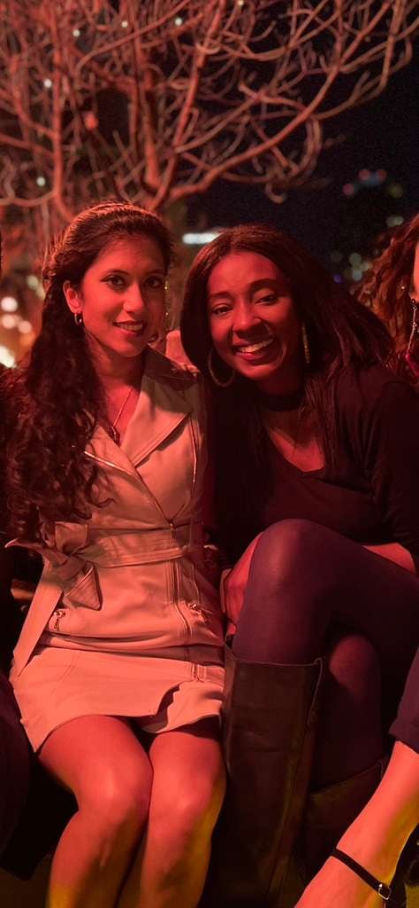
Lovonne
Hi I’m Lovonne! Priya has been my friend way before she knew I existed. Ha! I would attend her weekly teaching sessions during medical school and was always amazed by her smarts, and overall calm aura while tutoring a group of nervous and stressed medical students, myself front and center in that bunch. Fast forward 2 years later in 2015/16 and we became roommates paddling through an era in life that will just be the beginning of our (IRL) friendship. I do believe different friends serve a different purpose but Priya is like All Purpose flour, sufficing many roles in one, while authentically being who she is. And I am always still in awe by this. This is just through our friendship so I could only imagine what a beautiful life partner she would be. Fast forwarding many eras later, this union between her and Sanjay is a beautiful one and she deserves this joy and all the flowers. So honored to be present witnessing this partnership between Priya and Sanjay, still sitting front and center but this time as a bridesmaid. Mazel! 💐
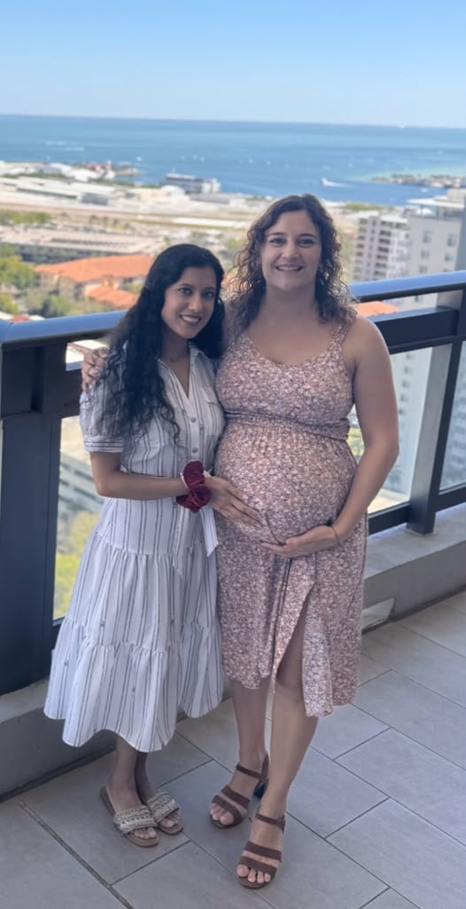
Celeste
Hi, I’m Celeste! I met Priya during our pediatric residency in 2019 and we’ve been close friends ever since. Somehow, after surviving residency together, we even decided to pursue the same subspecialty. Apparently, one challenging training program wasn’t enough! Over the years, we’ve shared countless long days, late nights, celebrations, challenges, many laughs, and everything in between. Priya is one of the kindest and most beautiful people I know, both inside and out. She has the biggest heart, always knows how to make people feel loved, and is the kind of friend everyone wishes they had. Seeing Priya with Sanjay is incredibly special. You can see the happiness and love in her eyes, and that brings me so much joy. Wishing you both a lifetime of love, laughter, unforgettable adventures, and a beautiful life together. I can’t wait to celebrate with you both!
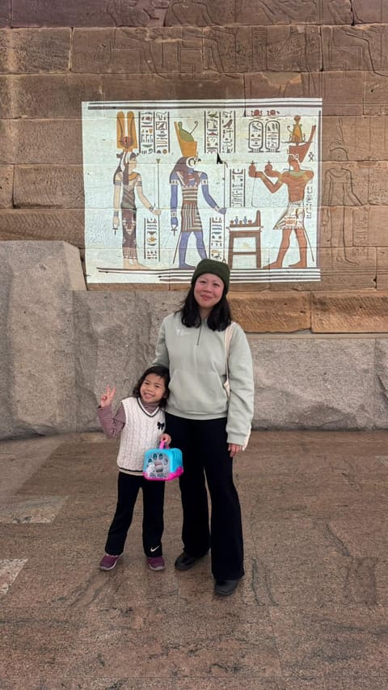
Anna
Hi everyone! I’m Anna! It was a little challenging to find a photo of just me because my camera roll is mostly filled with pictures of my daughter Juliette, so I hope you don’t mind us making this introduction together. 😊 I’m honored to be one of the bridesmaids, and Juliette the flower girl. I met Priya through my husband, Jeremy, during their residency. Over time, our friendship grew — she has been a constant in my life and one of the kindest people I know. I’m so grateful to celebrate this special season with her and Sanjay and I can’t wait to meet all of you!
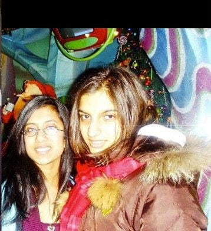
Gayatri
I’ve had the incredible privilege of knowing Priya since childhood. Our parents worked in medicine together, and from the very beginning our lives have been intertwined — from playdates to movie nights and high-school days with Priya (haphazardly) driving her car blasting Jesse McCartney! Over the years we’ve grown up side by side, supporting each other through every stage of life, from school days to becoming doctors in NYC. She is not only one of my closest and oldest friends, but also a beloved Aunty to my daughter — a reflection of just how deeply she’s part of my family. I feel so lucky to now celebrate this beautiful chapter in her life.
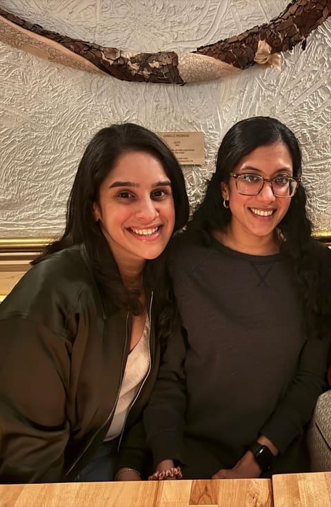
Anjli
Hi, I’m Anjli! I met Priya during our undergraduate years at Stony Brook, where we cofounded the college Raas-Garba team together. Between late-night practices, dress rehearsals, competitions, and countless performances, we built a friendship that has only grown stronger over the years. We’ve cheered each other on through medical school, career changes, life’s challenges, and so many milestones. One of my favorite memories is from when we were both living in the city. Priya stopped by my apartment before work for a cup of morning chai, chatting with my mom and me before heading out. It was such a simple moment, but it perfectly captures who she is—someone who makes time for the people she loves and brings warmth wherever she goes. Priya has one of the kindest hearts of anyone I know, and I feel incredibly lucky to call her one of my closest friends. Watching her and Sanjay find each other has been such a joy. I’m so grateful to celebrate this next chapter with them and can’t wait to see the beautiful life they build together!
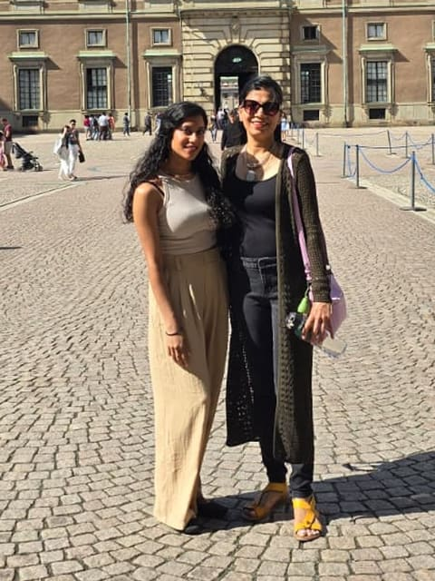
Puja
This is Puja! Priya and I have been friends even before she started preparing to get into medical school. Over the years, our friendship has grown into loving sisterhood. We’ve shared countless moments of happiness, laughter, adventures, and unforgettable trips within and to different countries. Through every high and low, we’ve always been there for each other. Priya is one of the sweetest and kindest people I know. She has a beautiful way of touching everyone’s life with her warmth, compassion, and positivity. There is so much I could say about her that words hardly do justice! It is such an honor to be Priya’s bridesmaid. Seeing the love and happiness that she and Sanjay bring into each other’s lives fills my heart with joy. I couldn’t be happier for them and wish them a lifetime of love, laughter, and beautiful memories together. I can’t wait to celebrate this special chapter with both of them and create many more wonderful memories in the years to come!
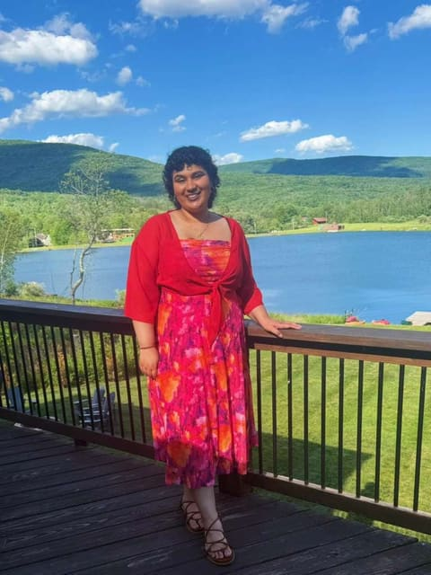
Kiran
I’m Kiran, Sanjay’s (slightly younger, definitely louder) sister and one of Priya’s bridesmaids. I’ve loved getting to know Priya and watching her and Sanjay bring out the best in each other — she balances him out in all the right ways. I’m so excited to celebrate them, support my new favorite addition to the family, and embarrass the groom just a little.
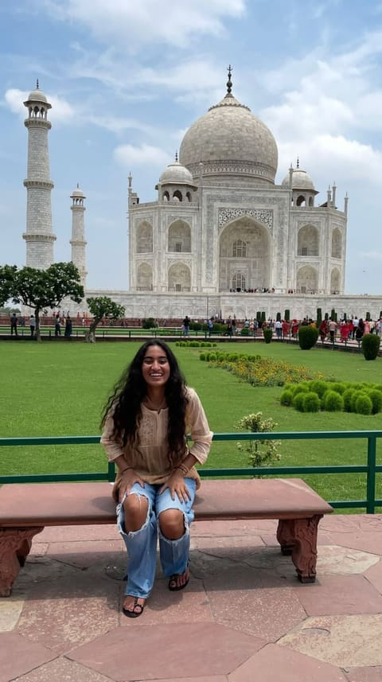
Anika
Hi! My name is Anika and I am Sanjay’s youngest sister and one of Priya’s lucky bridesmaids! I adore Priya and seeing how happy she makes my brother makes me even more eager to celebrate! I am so excited to have another sister who so seamlessly fits in with all of us. Priya truly brings out the best in my brother and I can’t wait for Priya to be stuck with us forever ;)
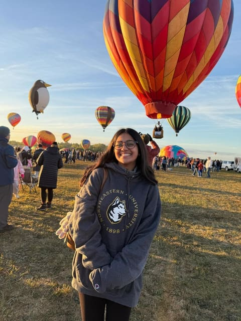
Kajal
Hi I’m Kajal, Sanjay’s cousin! Growing up with Sanjay, I always hoped he’d find someone truly special, and Priya is exactly that and more. She fits into our family so effortlessly and brings such warmth and joy wherever she goes. Seeing how happy they are together makes this day even sweeter. I’m so excited to welcome Priya into the family officially, wishing these two a lifetime full of love and laughter.
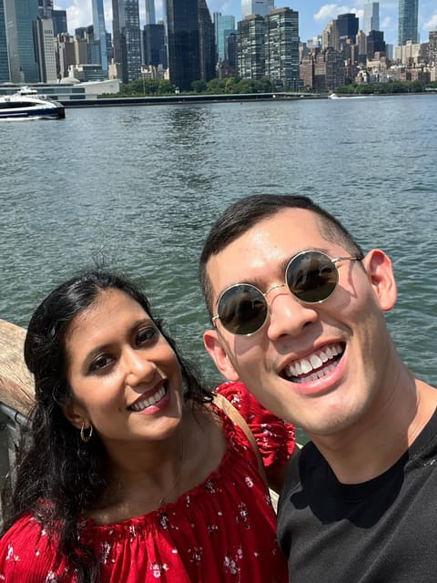
Steven Han
My name is Steven Han, and I have to start by saying that I am more than happy and honored to call Priya my best friend. Our story begins in lovely Ithaca, NY, during orientation week at the start of our undergrad career. A “few” Starbucks frappes/mint choco shakes, Swedish fish and M&Ms, and all-nighters in Uris library (aw, “Fish Bowl”) did our friendship flourish. Little did we know that life would bring us together again: navigating medical school life Hunger Games style, surrounded by crystal clear blue-green waters in beautiful Grenada. And now, PRIYA’S WEDDING!!! Woot woot! Priya has definitely shown me the definition of a best friend. She is kind, genuine, and a baus girl. There is never a day that we hang out, and we don’t get an ab workout from laughing too much. It is still surreal to me that she is getting married 🥲 but I am so happy for Priya, Sanjay and all the fam. Sanjay definitely found a gem 💎!
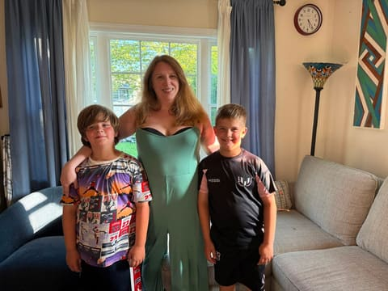
Colleen
I’ve been privileged to know Priya for the majority of our lives. For nearly three decades we’ve shared countless coffees, climacterics and conversations. My nephews — and soon-to-be ring bearers — Marcus and Teddy and I are so proud to celebrate Dr. Priya and share in this beautiful day.
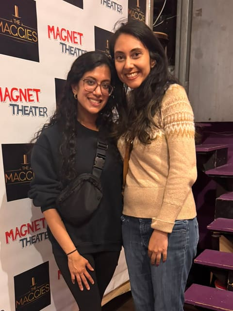
Nina
Hi all! I’m Nina! Priya and I are family friends 🥰 We met when we were teenagers and would hang out at family parties often and it felt like we grew up together. From attending her Sweet 16 to meeting at so many weddings together, we grew closer and now she is one of my dearest friends. Priya is an absolute sweetheart and I am truly blessed to have her in my life. I appreciate all the times she has been there for me. I recently performed at an Improv show and it meant so much that Priya was there and brought Sanjay with her. She is such a warm, kind and generous person, and makes everyone around her smile and feel so special. I am honored to be one of her Bridesmaids. She and Sanjay make such a lovely couple. I love how they compliment each other and I can’t wait to celebrate their love!!
The Groomsmen
Dan PetteFriend of the Groom
Although this tale finds its origins in our shared homeland, for many years Sanjay and I exchanged infrequent, respectful nods with stoic countenance in the halls of Lynbrook Senior High. It was in the later years that we together endured the embattled trenches of Stony Brook University. I wish I could say that we escaped unscathed, but I also wish not to speak with a false tongue. Aye! Yet that we emerged unbroken gave cause for rejoicing! Not long after, our paths diverged, and Sanjay watched, holding a solitary tear at bay as I embarked upon a stout vessel bound for my next adventure. Yet despite my travels across the land, our kinship hath endured those vast distances unto this very day.
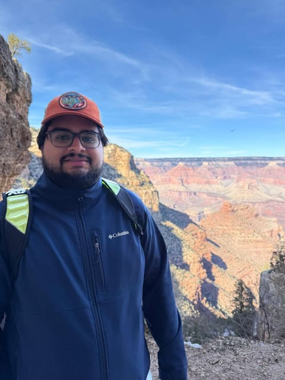
AnkushBrother-in-law of the Groom
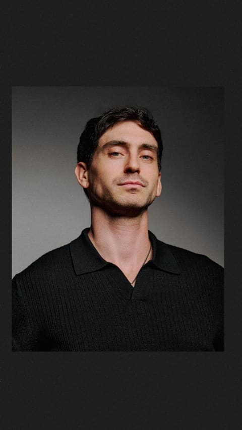
Jason PeerlessChildhood Friend of the Groom
Hi everyone, I'm Jason, one of Sanjay's closest friends.
I met Sanjay when his family moved next door to mine on Long Island about 25 years ago. We hit it off right away and basically grew up together. We spent countless hours playing video games, hanging out through elementary, middle, and high school, and later spent plenty of nights out together in New York City.
I do have to clear something up, though. For about 25 years, Sanjay has insisted that one of my video games was actually his. I'm still pretty sure it was Diddy Kong Racing for N64… but at this point, I've just let him keep telling his version.
As you all know, Sanjay is a total goofball, and that's one of the things I love most about him. He always knows how to make people laugh. But beyond that, he's genuinely one of the kindest, most genuine, and good-hearted people I know. Over the years, I've had the privilege of watching him grow not only as a friend, but also professionally. His work ethic has always been incredible, and it's been amazing to see everything he's accomplished.
I'm so happy for both Sanjay and Priya. Congratulations on this exciting new chapter together.
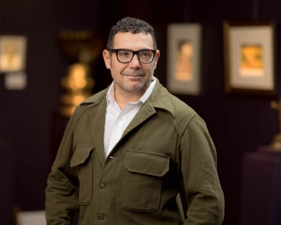
Darius ShemariaFriend of the Groom
Hello I'm Darius.
In the fifteen years I've known Sanjay his honesty, dedication to his craft and great sense of humor has been at the forefront of our friendship.
All through the dark days of NFTs, crypto pump and dump schemes and corporate malfeasance, Sanjay made sure not one of us lost our way.
Sanjay you are a true gem and I'm so happy that you have found such a lovely and wonderful partner. It's a true honor to stand by your side in celebrating your union.
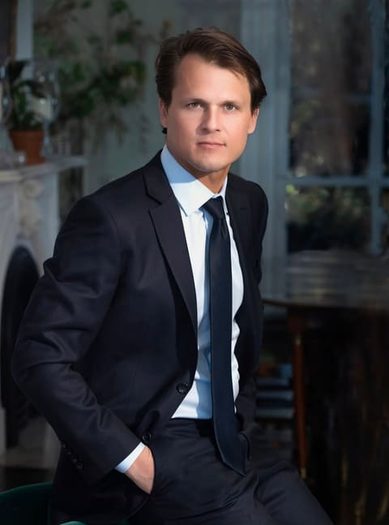
Walter Graham AraderFriend of the Groom
Sanjay and I became friends in 2010 through the Asian art market and have been close ever since. Over these past 16 years, we've done a lot of deals together and been through the tumultuous ups and downs of the markets, along with our fair share of difficult people and situations. Through all of it, I've come to admire how Sanjay shows persistence through everything — he doesn't waver, and he doesn't quit on the people and friends he's committed to. Along the way, I've also come to appreciate his sense of humor and humility, and to admire his grit and hard work. It is an honor to be a groomsman. It has been great to meet Priya, and I'm excited to celebrate the happy couple.
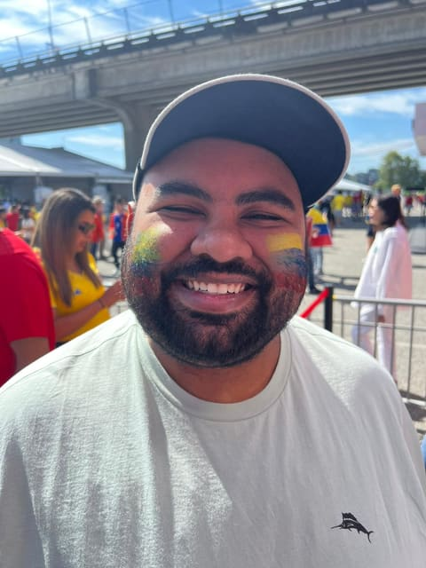
Dharshan DasrathCousin of the Groom
Hello, I'm Sanjay's cousin, Dharshan. I've had the opportunity to know Sanjay for the last 29 years. Sanjay is highly grateful for having me in his life for those years. I know I've been instrumental in shaping Sanjay into the person he is today. It was through tough love and pure passion that I was able to make Sanjay the best version of himself by the time Priya met him.
I'm excited to see Sanjay continue into this next stage of his life. I know he idolizes me, and he seeks only validation from me, so here it is. I wish him nothing but the best, and he has been a good mentee over the years. Congratulations to Priya for inheriting one of my success stories.
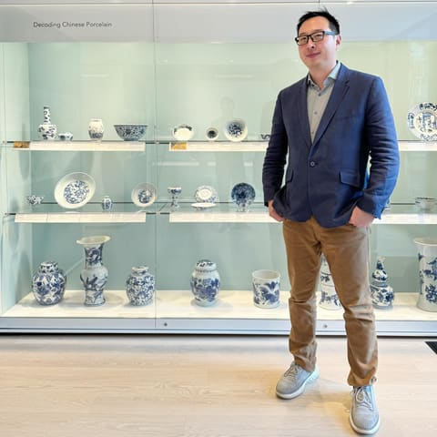
Anthony WuFriend of the Groom
Hi everyone, my name is Anthony (though most people call me Tony) and I'm Sanjay's friend from Canada.
I've had the privilege of knowing Sanjay for over 15 years through the Asian art world, and during that time we've shared countless (mis)adventures as we've tried to build our art businesses.
Sanjay is one of the funniest people I know, but what has always stood out to me even more is his humility and kindness. He's the type of friend you can spend hours talking with, usually about the most random topics imaginable, and somehow never run out of things to say. I'm incredibly grateful to count him among my closest friends.
Watching Sanjay and Priya together has been truly wonderful. Priya brings out the very best in him, and it's clear how happy they make each other. Seeing the two of you together is a beautiful reminder that the right person doesn't change who you are — they help you become the very best version of yourself.
Congratulations to you both. Wishing you a lifetime of love, laughter, happiness, and many wonderful adventures together.
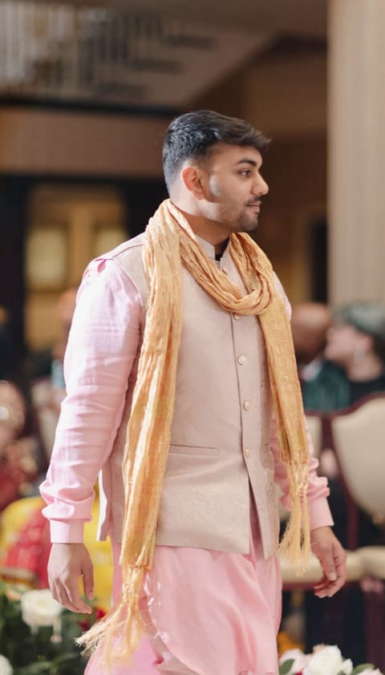
Adesh DasrathCousin of the Groom
I met Sanjay over 27 years ago by being born. I knew first impressions matter, so I was sure to wear a suit. From that very first day, we've done it all together. Laughed until we cried, cried until we laughed, and somehow grown up along the way. It's been my absolute pleasure to watch the pudgy, superhero-obsessed little nerd turn into the professional, hardworking, genuinely charismatic man we all know today.
With Priya's book smarts and Sanjay's street smarts, this power couple is about to outsmart every book and every street they come across. Their love is the kind that makes you stronger, braver, and ready to take on whatever's next.
I was born into this family, but I'm so grateful Sanjay chose Priya to grow it. It's truly an honor to celebrate alongside everyone.
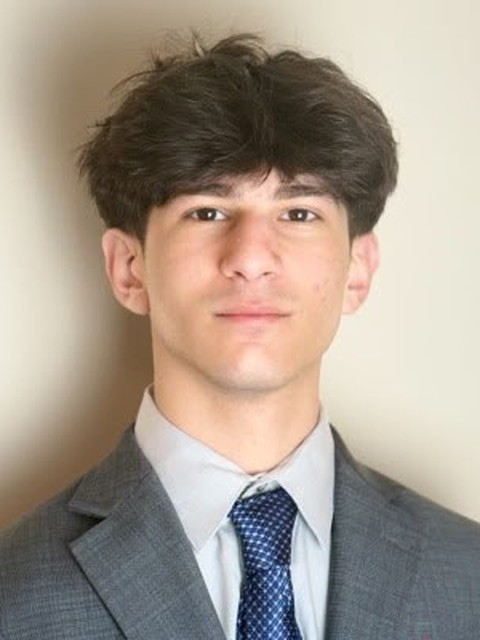
Nicholas HoustonFriend of the Groom
Awaiting details.
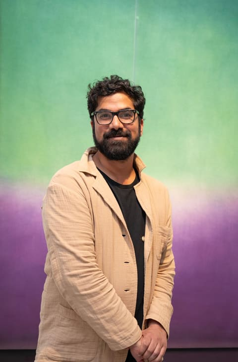
Pujan GandhiFriend of the Groom
Hello! My name is Pujan Gandhi. I feel I've had the privilege of knowing Sanjay my entire life, if not the one before. Back at SOAS in London, I still remember being in total nerves giving my first lecture; but Sanjay—in the back row—gave the most reassuring nod, before proceeding to heckle me at the most opportune times, smiling ear to ear throughout. And that's Sanjay—encouraging, joyful, and always offering a wide angle lens, both critical and kind. In the field of Indian art (and more), Sanjay is often my first call—he'll often know what I will say before I speak, and no matter how complex the situation we'd always find insight in a good laugh, bringing us forward to where we are today. We all know Sanjay possesses a wonderful way of being, and with Priya, it's been remarkable to witness and experience that spirit continue to grow. Thank you for showing us the power of love. My heartiest congratulations and very best wishes to you both.
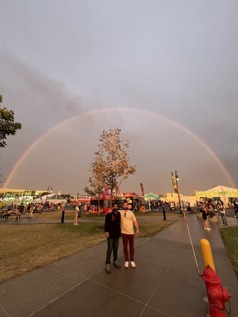
Dan LittFriend of the Groom
I’m genuinely unsure what I did to deserve this honor but I am dang sure grateful to have it.
Sanjay is a special man. I thank my good friend, Jason Peerless, a proud Long Island Jew, for bringing us into each other’s lives.
By some sorcery, Sanjay and I connected almost immediately despite Jason’s very awkward though adorable introduction. It was and continues to be the best. Like Sanjay. I love him and Jason both very much.
I am, sincerely, happy just to be able to take part in this celebration of two indubitably exceptional human beings. What a gift. Thank you as well to Sanjay’s family especially his sisters for how open-heartedly you have embraced me, without hesitation.
Love you Sanj
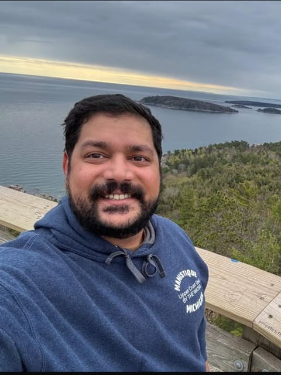
Prashanth PatilCousin of the Bride
I'm Prashanth Patil, cousin of Priya. She has long been a source of family and an anchor for who I am and our family. From the Midwest, people have been kind and courteous, which I have always resonated with, and I am happy to share this wonderful day of joining two people with everyone.
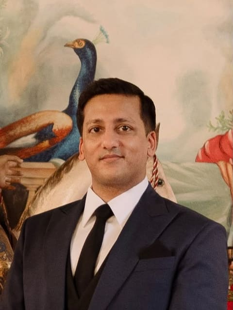
Prabhu PatilCousin of the Bride
Awaiting details.
Gary CrawfordFriend of the Groom
It is almost 11:00pm here on the Coast. No Coast was specified so I am under the wire.
I know none of you other than Walter. Hello Walter. It is obvious how much all of you care for Sanjay, as do I. I met Sanjay in Hong Kong when he and Ramesh were there at the Asian Art Fair. Walter, you might have also been showing at the year. Anyway, Sanjay was looking after Ramesh so kindly that it struck me that one rarely sees such kindness to one’s elder members in their family. Seeing how sincerely Sanjay took care of Ramesh convinced me that I had met a fine human being in the entitled world in which we live. A rare person is our Sanjay. I am looking forward to meeting all of you, Sanjay’s friends.
With love
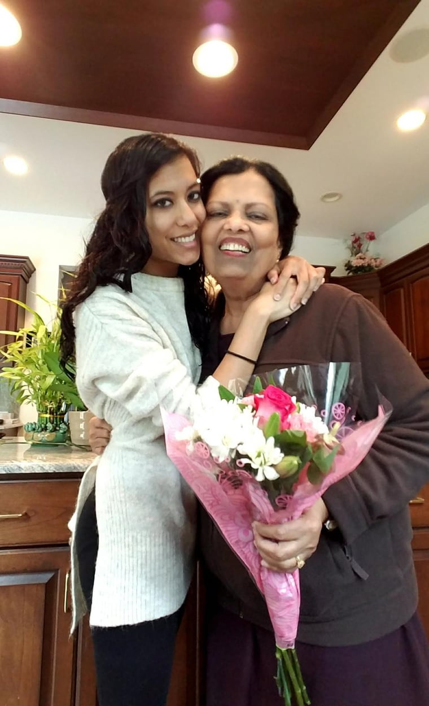
Shanta Mallikarjuna
Mother of the Bride
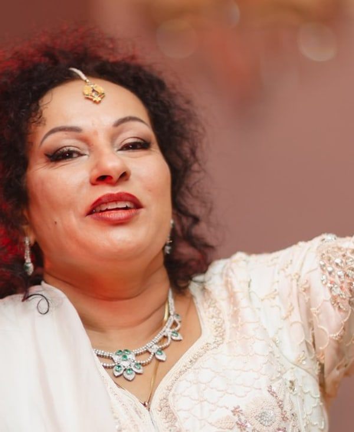
Floretta Kapoor
Mother of the Groom
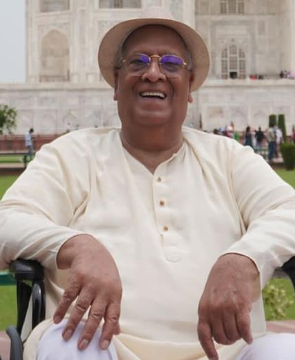
Ramesh Kapoor
Grandfather of the Groom
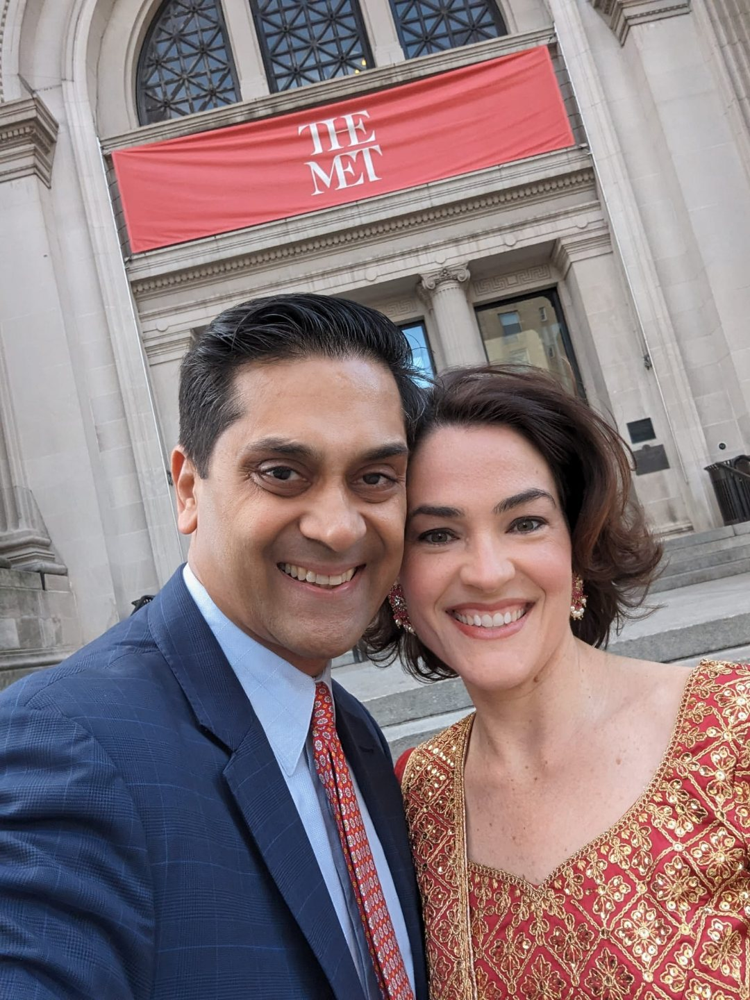
Suneet & Misty
Uncle of the Groom
In Loving Memory
Though they cannot celebrate beside us, their love and memories remain part of this journey.